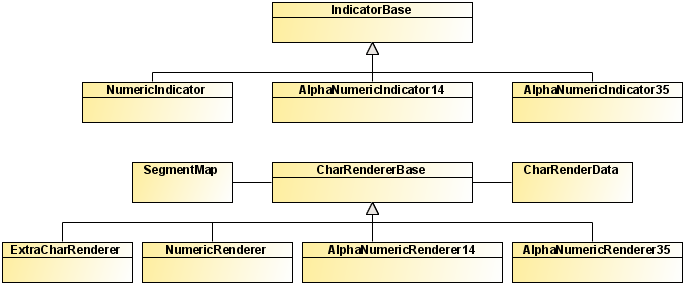

The indicator classes consist of controls derived from
an indicator base class and renderers derived from a character renderer
base class. The renderer base class has two supporting classes at
character level, one for data and one for the segment map that defines
the character display.
The following UML diagrams show the relationships between
the classes for indicator controls and the classes for indicator rendering
respectively.
